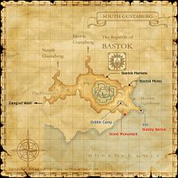
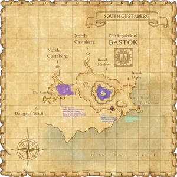

Description
South Gustaberg is an outdoor area in Gustaberg.
Map

Involved in Quests / Missions
| Quest / Mission | Type | Starter | Location |
|---|---|---|---|
| A Foreman's Best Friend | Map | Gudav | Port Bastok (H-5) |
| An Explorer's Footsteps | Map | Abelard | Selbina (G-9) |
| Smoke on the Mountain | General | Hungry Wolf | Metalworks (G-9) |
| The Bare Bones | Map | Degenhard | Bastok Markets (I-10) |
| The Cold Light of Day | General | Malene | Bastok Markets (I-5) |
NPCs
| Name | Location | Type |
|---|---|---|
| Fish Eyes | E-8 | Special Event; Sunbreeze Festival Vendor |
Notorious Monsters
| Name | Level | Drops | Steal | Family | Spawns | Notes |
|---|---|---|---|---|---|---|
| Carnero | 11-12 | Fresh Blood Giant Sheep Meat Sheepskin Sheep Tooth Katayama | — |  SheepImage source SheepImage source | — | A, L |
| Leaping Lizzy | 10-11 | Leaping Boots Lizard Skin Lizard Tail | — |  LizardsImage source LizardsImage source | — | Respawn: 5 minutes - 6 hours; L, H; Horizon-specific variant |
Regular Monsters


Event Monsters
| Name | Level | Drops | Steal | Family | Spawns | Notes |
|---|---|---|---|---|---|---|
| Bubbly Bernie | 09-10 | Steam Clock Land Crab Meat | — |  CrabsImage source CrabsImage source | 1 | Spawned Quest: The Cold Light of Day; H |
Story walkthroughs in this area
| Story | Mission / quest |
|---|---|
| CoP 2-5 | Ancient Vows |
| CoP 3-1 | The Call of the Wyrmking |
References
External references describe their own server or retail rules. Documented Zenith changes take precedence.
Map credits: Map 1 — HorizonXI Wiki. Original game maps © SQUARE ENIX; redrawn maps retain the credited authorship and license.

Additional level-75 reference


|
Spreading out to the south of Bastok is the rocky terrain of South Gustaberg. Plentiful with ore, hundreds of tunnels and mine shafts have been dug beneath the earth by Humes and Quadav alike. To the east, the Morhen Lighthouse can be found on the cliffs lining the Bastore Sea, its light guiding the way for the ferries and airships that traverse the area. Connecting Areas
|

Involved in Quests/Missions
| Quest | Type | Starter | Location |
| A Foreman's Best Friend | Map | Gudav | Port Bastok H-5 |
| An Explorer's Footsteps | Map | Abelard | Selbina G-9 |
| Smoke on the Mountain | General | Hungry Wolf | Metalworks G-9 |
| The Bare Bones | Map | Degenhard | Bastok Markets I-10 |
| The Cold Light of Day | General | Malene | Bastok Markets I-5 |


Notorious Monsters Found Here
|
Name |
Level |
Drops |
Steal |
Family |
Spawns |
Notes | |||||||
|
9-10 |
None |
1 |
H | |||||||||
|
10-11 |
None |
1 |
L, H | ||||||||||
|
11-12 |
2 |
A, L | |||||||||||
|
HP = Detects Low HP; M = Detects Magic; Sc = Follows by Scent; T(S) = True-sight; T(H) = True-hearing JA = Detects job abilities; WS = Detects weaponskills; Z(D) = Asleep in Daytime; Z(N) = Asleep at Nighttime | |||||||||||||
 |

Mobs Found Here
|
Name |
Level |
Drops |
Steal |
Family |
Spawns |
Notes | |||||||
|
3 - 8 |
13 |
A, L, H | |||||||||||
|
3 - 8 |
11 |
A, L, H | |||||||||||
|
5 - 8 |
10 |
A, H, HP | ||||||||||
|
1 - 4 |
25 |
H | ||||||||||
|
4 - 8 |
8 |
A, H, HP | ||||||||||
|
3 - 5 |
12 |
L, H | ||||||||||
|
5 - 8 |
1 |
A, L, S | |||||||||||
|
3 - 4 |
4 |
A, L, S | |||||||||||
|
3 - 8 |
17 |
A, L, S | |||||||||||
|
3 - 8 |
11 |
A, L, S | |||||||||||
|
-1 |
26 |
S, Sc | |||||||||||
|
5 - 6 |
16 |
H | |||||||||||
|
2 - 6 |
30 |
S, Sc | |||||||||||
|
5 - 6 |
1 |
A, H | ||||||||||
|
5 - 8 |
21 |
L, S | |||||||||||
|
? |
1 |
A, H | ||||||||||
|
3 - 8 |
|
33 |
L, H | ||||||||||
|
3 - 4 |
1 |
A, H | ||||||||||
|
8 - 10 |
7 |
A, S, M | ||||||||||
|
2 - 3 |
1 |
A, H | ||||||||||
|
2 - 5 |
68 |
H | |||||||||||
|
-1 |
14 |
H | |||||||||||
|
2 - 6 |
42 |
L, H | |||||||||||
|
2 - 6 |
49 |
H | |||||||||||
|
3 - 8 |
23 |
A, L, H | |||||||||||
|
HP = Detects Low HP; M = Detects Magic; Sc = Follows by Scent; T(S) = True-sight; T(H) = True-hearing JA = Detects job abilities; WS = Detects weaponskills; Z(D) = Asleep in Daytime; Z(N) = Asleep at Nighttime | |||||||||||||
Adapted from Eden Wiki: South Gustaberg · Contributors and history · CC BY-SA 4.0. Revision 46820. Layout, links and optional background text adapted for Zenith.